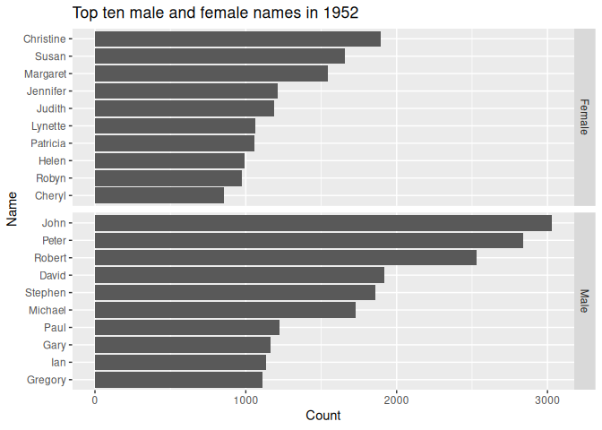
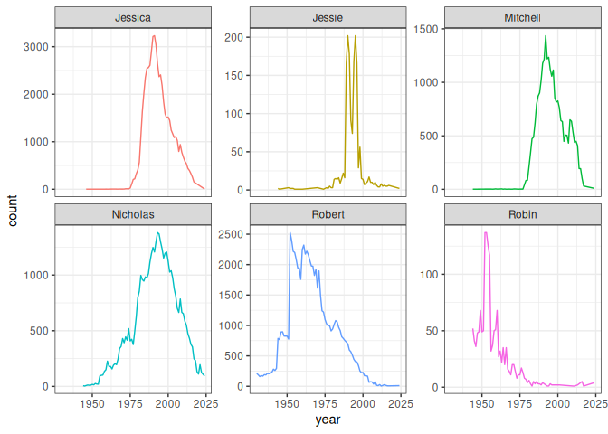
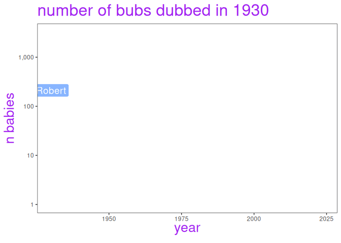

The ozbabynames package provides the dataset ozbabynames. This contains popular Australian baby names by sex, state and year.
library(ozbabynames)
head(ozbabynames)
#> name sex year count state
#> 1 Isla Female 2023 403 New South Wales
#> 2 Amelia Female 2023 399 New South Wales
#> 3 Olivia Female 2023 381 New South Wales
#> 4 Mia Female 2023 347 New South Wales
#> 5 Charlotte Female 2023 338 New South Wales
#> 6 Ava Female 2023 284 New South WalesInstallation
You can install the development version of ozbabynames from github:
install_github("robjhyndman/ozbabynames")The CRAN version can be installed using:
install.packages("ozbabynames")Related packages
- babynames - US baby names from 1880 to 2017.
- nzbabynames - New Zealand baby names from 1900 to 2017.
- norwaynames - Norway baby names from 1880 to 2017.
Example usage
library(ggplot2)
library(dplyr)
ozbabynames_1952_top_10 <- ozbabynames |>
filter(year == 1952) |>
group_by(sex, name) |>
summarise(count = sum(count)) |>
arrange(-count) |>
top_n(10) |>
ungroup()
ggplot(ozbabynames_1952_top_10,
aes(x = reorder(name, count),
y = count,
group = sex)) +
geom_col() +
facet_grid(sex ~ .,
scales = "free_y") +
coord_flip() +
ylab("Count") + xlab("Name") +
ggtitle("Top ten male and female names in 1952")
And let’s look at the popularity of the package author names, “Rob”, “Mitchell”, “Nicholas”, and “Jessie”, as well as some similar names.
author_names <- c("Robin", "Robert", "Mitchell", "Nicholas", "Jessie", "Jessica")
ozbabynames |>
filter(name %in% author_names) |>
group_by(name, year) |>
summarise(count = sum(count)) |>
ggplot(aes(x = year,
y = count,
colour = name)) +
geom_line() +
theme_bw() +
facet_wrap(~name,
scales = "free_y") +
theme(legend.position = "none")
And let’s see that animated
library(gganimate)
ozbabynames |>
filter(name %in% author_names) |>
count(name,year, wt = count) |>
ggplot(aes(x = year,
y = n,
colour = name,
group = name,
label = name,
fill = name)) +
geom_line(linewidth = 1, linetype = "dotted") +
geom_label(colour = "white", alpha = 0.75, size = 5) +
theme_bw() +
theme(panel.grid = element_blank(),
legend.position = "none",
title = element_text(colour = "purple",
size = 20,
face = "bold")
) +
labs( title = "number of bubs dubbed in {frame_along} ",
y = "n babies" ) +
scale_y_log10(labels = scales::comma) +
transition_reveal(along = year)
Known Issues
The coverage is very uneven, with some states only providing very recent data, and some states only providing the top 50 or 100 names. The ACT does not provide counts, and so no ACT data are included. South Australia has by far the best data, with full coverage of all names back to 1944.